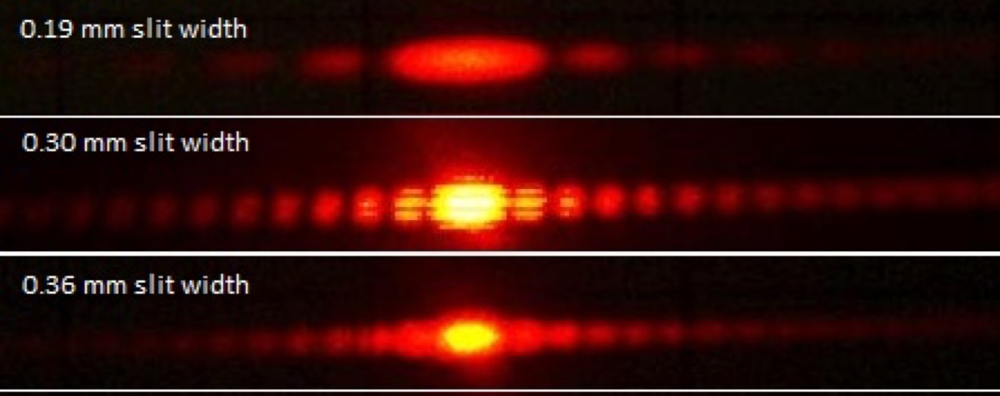
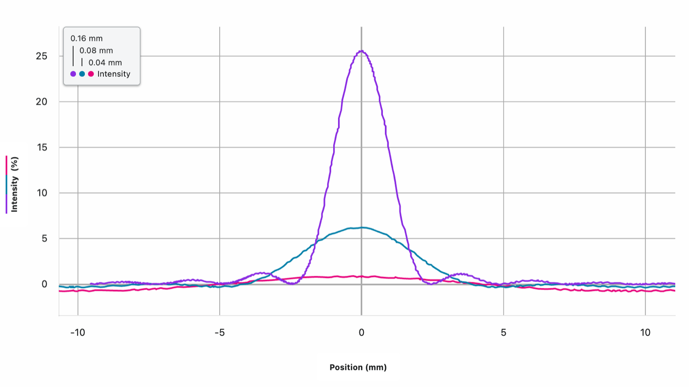

Setup
This is an experiential activity built around one Vernier diffraction apparatus. I do not have one for every group. Instead, Graphical Analysis Pro shares its live data directly to every student's device. There is no projector: students look at the physical apparatus and the resulting data on their own screens at the same time. Lesson 9 stopped at one fixed slit width, \(b\). This lesson exists to change \(b\) on purpose and measure what happens to the pattern.
Three Slits, Side by Side
Before any sensor is involved, a direct photograph of the pattern at three different real slit widths already shows the effect plainly. Read top to bottom: the pattern gets visibly wider and dimmer as the slit gets narrower, and tighter and brighter as the slit gets wider.

A student's first guess for why is usually the same guess: a wider slit lets more of the wavefront through, so more Huygens wavelets are radiating, so there's "more interference," so the diffraction pattern should be more visible. It's a reasonable guess, and it's half right for the wrong reason, worth taking seriously before the data corrects it.
The Data
This is what the class actually recorded, live, with the Vernier sensor and Graphical Analysis Pro, holding the laser and screen distance fixed and swapping only the slit.

A student went to the board and built a table from the same data, measuring the width of the central maximum and the width of a secondary maximum directly off the screen for each slit width:
| Slit width, \(b\) | Central maximum width | Secondary maximum width |
|---|---|---|
| 0.16 mm | 5.249 mm | 2.45 mm |
| 0.08 mm | 10.075 mm | 4.74 mm |
| 0.04 mm | ≈ 20 mm (predicted, not directly measured) | ≈ 10 mm (predicted, not directly measured) |
| 0.02 mm | — no measurement recorded | — no measurement recorded |

Correcting the First Guess
Halving \(b\), from 0.16 mm to 0.08 mm, roughly doubled the central maximum's width, 5.249 mm to 10.075 mm. Halving it again, to 0.04 mm, was predicted to double it again, to roughly 20 mm, consistent with the pattern already established. That is the opposite of "more visible diffraction" in the spreading sense: the wider slit produced the narrower pattern.
This is exactly what Lesson 9's derivation already predicts, nothing new has to be invented. The first dark fringe sits at \(b\sin\theta = \lambda\), or in the small-angle form the data booklet gives, \(\theta = \lambda/b\). \(\lambda\) doesn't change, the laser is the same laser throughout, so \(\theta\) and \(b\) are inversely related: \(b \propto 1/\theta\), the exact relationship written on the board. Double the slit width and the angle to the first minimum is cut in half; the whole pattern, central maximum included, is compressed into a narrower cone around the straight-through direction.
What a Wider Slit Actually Buys You: Intensity
The "more wavelets, more interference" instinct wasn't wrong, it was pointed at the wrong feature of the graph. More wavelets across a wider opening don't spread the pattern out further, they concentrate it. Look at the peak intensities instead of the widths: roughly 25.5% at \(b=0.16\) mm against roughly 6.2% at \(b=0.08\) mm, a jump of about 4 times for a slit only twice as wide.
That factor of four, not two, is the signature of an intensity that scales with \(b^2\), not \(b\). It follows from putting together two things already on this page: a wider slit admits proportionally more light energy, roughly \(\propto b\), and that same wider slit squeezes its pattern into a proportionally narrower angle, \(\propto 1/b\). The same or greater amount of energy, packed into an angular range that keeps shrinking, has to show up as sharply rising intensity at the centre, intensity \(\propto b \times \tfrac{1}{1/b} = b^2\). Narrower and brighter aren't two separate effects, they're the same effect looked at two different ways.
The Limiting Cases
Push \(b\) the other way from the classroom's smallest slit, far below any of the values measured here, and \(\theta=\lambda/b\) grows without bound: the pattern spreads across the whole wall and its intensity, falling as it's spread thinner, drops toward nothing, which is exactly the trend the 0.04 mm trace already shows nearly buried in the sensor's noise floor. This is the deep-diffraction regime, \(b \sim \lambda\), where wave behaviour completely dominates what a ray picture would ever predict.
Push \(b\) the other way, far larger than any slit used today, and \(\theta = \lambda/b \to 0\): the central maximum collapses down onto the undiffracted, straight-through direction, and the pattern one would have to call "diffraction" simply disappears into a sharp, bright, undeviated beam. That is the classical, geometric-optics limit, light travelling in straight lines through an opening, and it's not a different kind of physics from what's on this page. It's the same \(b\sin\theta_n = n\lambda\) relationship, evaluated at a slit width most of everyday experience never gets far from.
Field Notes
I finish with the double slit. Students immediately see that its pattern is different, but they can still identify the broader single-slit diffraction envelope around the finer interference structure. I do not resolve that observation here. It is the hook for the next class and the transition into double-slit interference.